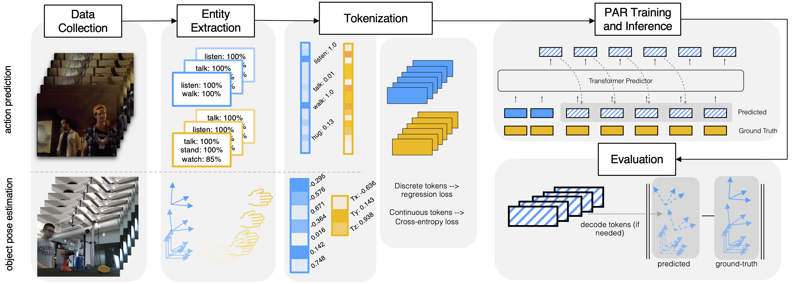

We introduce a simple framework for predicting the behavior of an ego agent in multi-agent settings. In contrast to autoregressive (AR) tasks, such as language processing, our focus is on scenarios with multiple agents whose interactions are shaped by physical constraints and internal motivations. To this end, we propose Poly-Autoregressive (PAR) modeling, which forecasts an ego agent’s future behavior by reasoning about the ego agent’s state history and the current state of other interacting agents. At its core, PAR represents the behavior of all agents as a sequence of tokens, each representing an agent’s state at a specific timestep. With minimal data pre-processing changes, we show that PAR can be applied to three different problems: human action prediction in social situations, trajectory prediction for autonomous vehicles, and object pose prediction during hand-object interaction. Using a small proof-of-concept transformer backbone, PAR outperforms AR across our three scenarios.
Our Poly-Autoregressive Framework disentangles task-specific modeling requirements from multi-agent behavior prediction.
We begin by collecting a video dataset, such as AVA (top) or DexYCB (bottom). Then, using dataset labels or computer vision techniques, a trajectory with the appropriate modality for our prediction task is extracted for each agent, such as action class labels (top) or object pose and 3D hand translation (bottom). Data is then tokenized, either through discretization or directly using continuous values, with our framework supporting both formats. Based on the tokenization and prediction task, we choose the appropriate loss function for PAR training. After training with PAR, predicted tokens can be decoded back to data space and evaluated with relevant metrics.
Inference for (autoregressive (AR) models and (b) our proposed poly-autoregressive (PAR) model. Solid indicates ground-truth tokens which represent a data modality such as action or 6DOF pose; striped represents predicted output tokens. Colors denotes agent identity. Compared to AR models, the PAR model takes other agents’ tokens as inputs when making a prediction for the next timestep.
Training with teacher forcing for multi-agent next-token prediction in autoregressive models and multi-agent poly-autoregressive models. Solid indicates a ground-truth token and striped predicted. Color denotes agent identity. The AR model is trained for next-token prediction, while the PAR model is trained to predict the next timestep of the same agent.
@article{thakkar2025polyautoregressive,
author = {Thakkar, Neerja and Sadjadpour, Tara, and Rajasegeran, Jathushan, and Ginosar, Shiry, and Malik, Jitendra},
title = {Poly-Autoregressive Prediction for Modeling Interactions},
journal = {CVPR},
year = {2025},
}